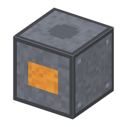

説明
①子ども るつぼを使わずに、シリコンの棒の一部だけを溶かして単結晶にする炉。溶けた所は宙にうかんでいる。
②学生 電気 20kW（誘導加熱）。多結晶シリコン2＋シリコン種結晶（減らない）＋アルゴン2（隣のガスホルダーから補充）＋ドーパント（なくてもよい）→ シリコン単結晶1（300秒）。CZ と違って石英るつぼを使わない（減らない）。できた結晶は酸素が約0.05 ppma と少ない。
③大人 縦にした棒をコイルで部分的に溶かすと、溶けた帯は表面張力で落ちずに棒のあいだに保たれる。帯を動かしていくと、通ったあとが単結晶になる。何も触れないので、るつぼから溶けこむ酸素や汚れがない。
④ガチ 1952年、ベル研のテウラーが帯域精製を縦にした方法を考え（特許は1952年12月出願・1962年成立）、1953年に米陸軍のキックとゴレイ、1953〜54年にシーメンスのエマイスも別々に作った。酸素の少ない高い抵抗のシリコンは、電力用の素子や放射線の検出器に使われる。 ⚠️ シーメンス法（1956〜）より FZ のほうが古いのは、最初は四塩化ケイ素を亜鉛で還元したシリコン（デュポン）を使ったため。ゲームではシーメンス法の多結晶を使う。
作り方
使い道
（このアイテムを使うレシピは無い）